🎬 우토그록 Uto Grok for 실버인포롱폼 2기
grok.com 동영상 자동 생성 · 업스케일 · 다운로드 Chrome 확장프로그램
다른 분들께 공유하거나 외부에 올리시면 안 됩니다. (승인제라 공유해도 사용은 못 하지만요 😉)
📌 꼭 지켜주세요
본 자료는 저작권법으로 보호되는 저작물입니다.
1. 캡쳐·복사·재가공 등 2차 활용을 포함한 모든 무단 사용을 금지합니다.
2. 위반 확인 시 저작권법 제136조에 따라 형사 고소 및 손해배상 청구 등 법적 조치를 즉시 진행합니다.
서로 지켜주셔야 계속 좋은 자료를 드릴 수 있습니다. 감사합니다 🙏
📥 다운로드
📋 설치 순서 요약 (자세한 내용은 설치 가이드 확인 필수)
- 위 링크에서 zip 파일 다운로드 → 압축 풀기
- Chrome에서
chrome://extensions접속 → 개발자 모드 ON - "압축해제된 확장 프로그램을 로드합니다" → 폴더 선택
- grok.com 접속 → 툴바에서 우토그록 아이콘 클릭
- 신청 화면에서 성함 / 닉네임 / 강의명 입력 → 관리자 승인 후 사용 가능 (실버인포롱폼 수강생은 해당사항 없음)
- grok.com/imagine 에서 사용하기
| 버전 | 날짜 | 다운로드 | 주요 변경 |
|---|---|---|---|
| v2.2.0 | 2026.04.28 | 다운로드 | 백그라운드 작동, 만료일 재계산 |
| v2.1.0 | 2026.04.23 | — | 텔레그램 알림, 일괄 승인, 딜레이 10초 |
| v2.0.0 | 2026.04.13 | — | 신청 승인제, 기간 관리, 비율 확장 |
| v1.1.0 | 2026.04.01 | — | 자동 새로고침 재시도, 완료 요약 |
| v1.0.1 | 2026.04.01 | — | 이미지 정렬, 드래그 순서 변경 |
| v1.0.0 | 2026.03.31 | — | 최초 공개 버전 |
🛠️ 설치 가이드 🧡 필독 🧡
처음 설치하시는 분은 아래 순서를 하나씩 따라해 주세요.
우토그록 v2.2.0 for 실버인포 2기.zip 파일을 받고, 압축을 풀어주세요.
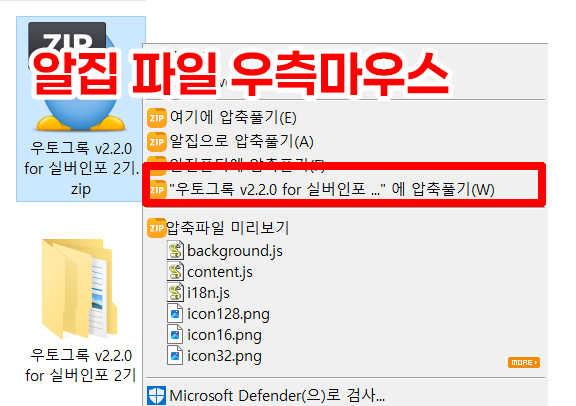
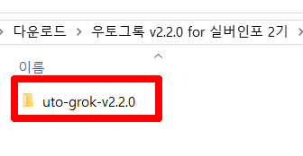
chrome://extensions 를 입력하고 엔터를 눌러주세요.
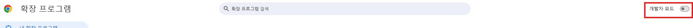
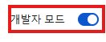
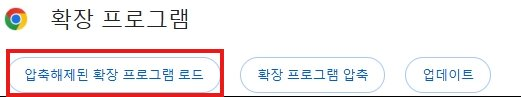
압축 푼 폴더를 1번 클릭 (더블클릭 X) 하고 "폴더 선택" 버튼을 눌러주세요.
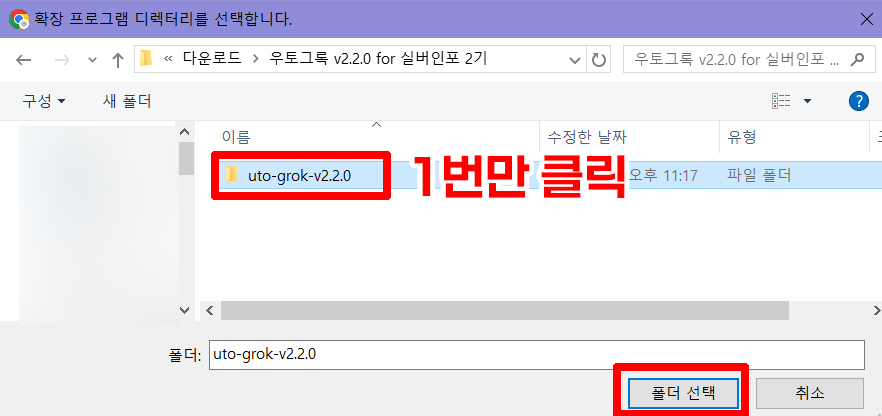
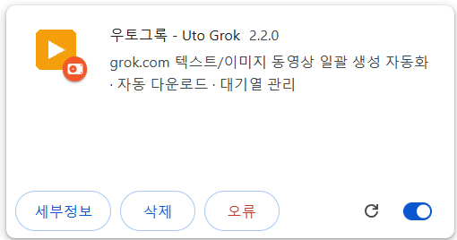
💌 신청 및 인증
별도로 신청하지 않으셔도 됩니다.
최초 사용 시 (신청)
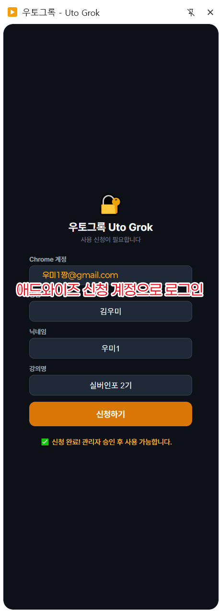
- 확장프로그램 사이드패널을 열면 신청 화면이 표시됩니다
- Chrome 계정 이메일이 자동 감지됩니다 (수정 불가)
- 성함, 닉네임, 강의명을 입력합니다
※ 닉네임 중복불가 — 디하클에서 사용하는 닉네임으로 가입해주세요 - "신청하기" 버튼을 클릭합니다
- 관리자 승인을 기다립니다
승인 확인
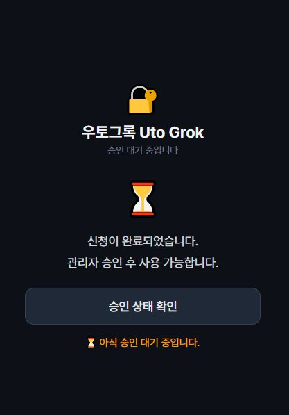
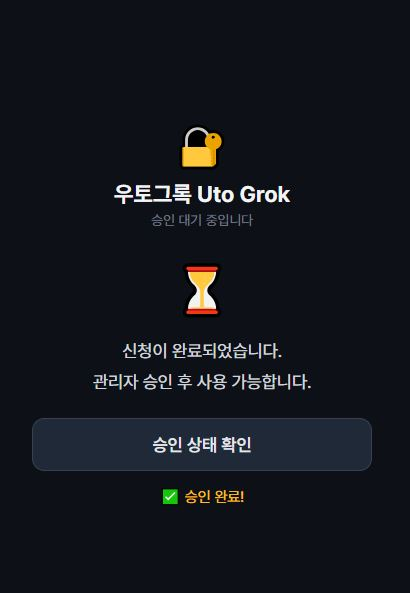
- 관리자가 승인하면 "승인 상태 확인" 버튼을 클릭합니다
- 승인 완료 시 바로 메인 화면으로 전환됩니다
- 이후에는 자동 인증됩니다 (매번 입력 불필요)
이용 기간
| 구분 | 이용 기간 |
|---|---|
| 일반반 | 승인일로부터 3개월 |
| 프리미엄반 | 승인일로부터 6개월 |
| 챌린지 성공 | 정규 4강 이후 시작하는 챌린지 성공 시 +1개월 연장 |
| 숙제 성공 | 2·3·4주차 기간 안에 숙제 성공 시 +1개월 연장 |
✨ 승인 후 확장프로그램 기본 사용법
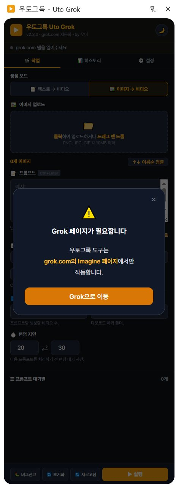
1. 사이드패널 열기
주소창 - 즐겨찾기 아이콘 옆에 보면 퍼즐 모양처럼 생긴 아이콘 있죠? 클릭 후 우토그록을 클릭하시면 사이드에 패널이 생깁니다!
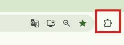
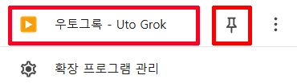
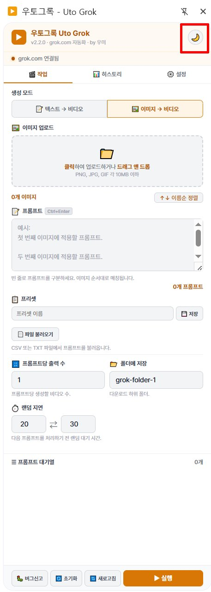
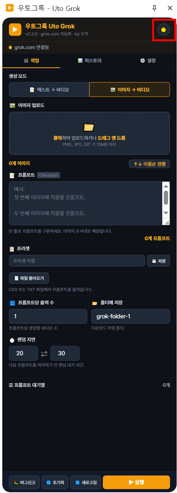
2. 사용 전 설정부터! ⚙️
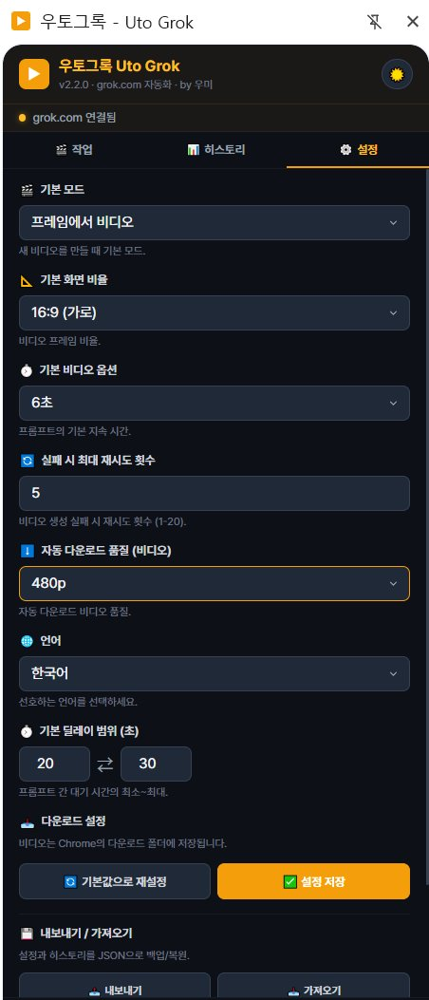
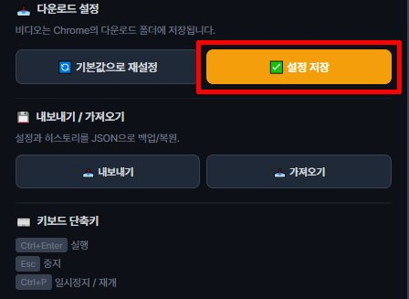
| 설정 | 설명 | 기본값 |
|---|---|---|
| 화면 비율 | 16:9 (가로) / 9:16 (세로) / 1:1 (정사각) / 3:2 / 2:3 | 16:9 |
| 길이 | 5s / 6s / 10s | 6s |
| 딜레이 | 작업 간 대기 시간 (초). rate limit 방지용 | 45~60초 |
| 품질 | 480p / 480p+업스케일 / 720p | 480p |
| 폴더명 | 다운로드 파일 저장 폴더명 | grok-folder-1 |
| 자동 재시도 | 실패 시 재시도 횟수 | 5회 |
3. 텍스트 → 동영상
- 텍스트→비디오 탭 선택
- 프롬프트를 한 줄에 하나씩 입력
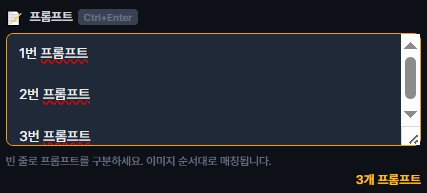
- 화면 비율(16:9 / 9:16 / 1:1), 길이(5s / 6s / 10s) 설정
- ▶ 생성 시작 클릭
4. 이미지 → 동영상
- 이미지→비디오 탭 선택
- 이미지를 드래그앤드롭 또는 클릭하여 업로드 (여러 장 가능)
- 정렬 기능
· 이미지 이름순 자동 정렬 가능
· 드래그해서 순서 수동으로 변경 가능
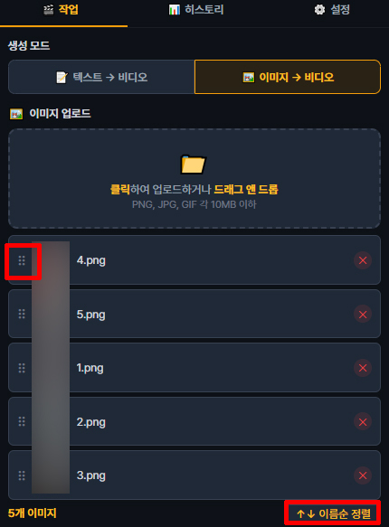
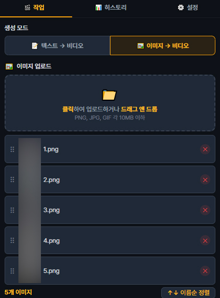
- 프롬프트 입력 — 빈 줄로 프롬프트를 구분합니다
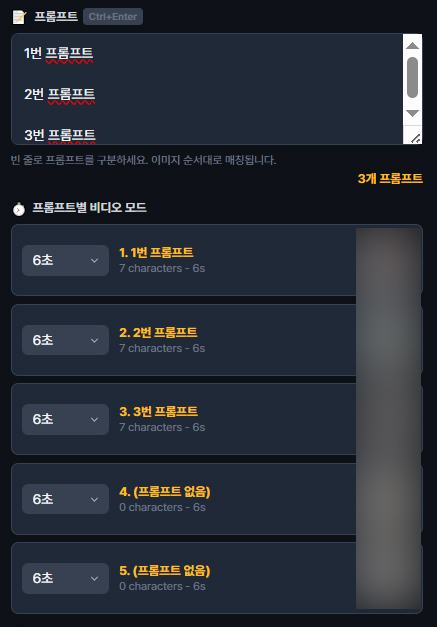
- ▶ 생성 시작 클릭
- 동영상 생성이 전부 완성이 되고 나면 알림창이 뜹니다.
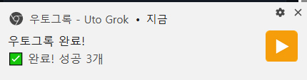
- 다운로드 폴더 확인하면 잘 다운로드 되어 있는 게 보입니다.
파일명은 만든 날짜가 나오고, auto라 적힌 부분은 입력하신 프롬프트가 됩니다.
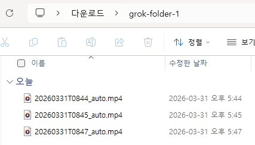
⌨️ 단축키
| 단축키 | 기능 |
|---|---|
| Ctrl + Enter | 생성 시작 |
| Esc | 중지 |
| Ctrl + P | 일시정지 / 재개 |
🔍 업스케일 기능
품질 설정에서 480p-업스케일 또는 720p를 선택하면, 동영상 생성 완료 후 자동으로 업스케일이 진행됩니다.
📊 완료 요약 및 재실행
작업이 모두 완료되면 결과 요약이 표시됩니다:
실패한 항목이 있으면 "🔄 실패 N건 재실행" 버튼이 자동으로 나타납니다. 클릭하면 실패한 것만 다시 실행합니다.
⚠️ 주의사항
- grok.com 계정에 로그인된 상태여야 합니다
- grok.com의 Imagine 페이지에서만 작동합니다
- 너무 빠르게 연속 생성하면 rate limit (429/409 에러)이 걸릴 수 있습니다. 딜레이를 45초 이상으로 설정하세요
- grok.com UI가 업데이트되면 일부 기능이 작동하지 않을 수 있습니다. 이 경우 확장프로그램 업데이트를 기다려주세요
🔧 트러블슈팅 가이드
문제가 발생했을 때 아래 순서대로 확인하세요. 오류나면 무조건 여기 먼저 보세요!
1단계 기본 확인
- ✅ grok.com에 로그인 되어 있나요?
- ✅ grok.com/imagine 페이지에 있나요?
- ✅ 확장프로그램이 최신 버전인가요?
- ✅ 신청 후 관리자 승인을 받았나요?
2단계 실행 중 에러
→ 계속 실패 시 딜레이를 60초 이상으로 변경
→ 딜레이를 60초 이상으로 올리기
3단계 업스케일 안 됨
→ 맞는데도 안 되면 → 🔃 새로고침 후 다시 실행
→ v2.0.0 이전 버전이면 → 최신 버전으로 업데이트
4단계 그래도 안 될 때
- grok.com에서 수동으로 동영상 1개 생성해보기
- 수동 생성도 안 되면 → grok.com 자체 문제 (계정 한도 초과 등)
- 수동은 되는데 확장프로그램만 안 되면 → 🐛 버그신고 → 카페 게시글에 댓글
콘솔 에러 참고표
| 에러 메시지 | 원인 | 조치 |
|---|---|---|
전송 버튼을 찾을 수 없습니다 | 이미지 업로드 실패 | 🔃 새로고침 → 재실행 |
Could not establish connection | content script 미로드 | 🔃 새로고침 |
tabs.sendMessage 에러 | grok 탭 미연결 | v1.0.1 이상 업데이트 |
409 Conflict | grok rate limit | 5~10분 대기 + 딜레이 60초↑ |
user-skills 403 Forbidden | grok.com 자체 에러 | ⭕ 무시 (우토그록 무관) |
Play failed: NotAllowedError | 브라우저 자동재생 정책 | ⭕ 무시 (우토그록 무관) |
❓ FAQ 자주 묻는 질문
네, 가능합니다. v2.2.0부터 Web Worker 기반 타이머가 적용되어 창을 최소화하거나 다른 탭으로 전환해도 작업이 멈추지 않고 계속 진행됩니다.
Chrome 툴바의 퍼즐 아이콘(🧩)을 클릭한 뒤, 우토그록 옆의 📌 핀 버튼을 눌러주세요.
grok.com이 아닌 다른 사이트에서 열었을 때 나타납니다. "Grok으로 이동" 버튼을 누르면 grok.com/imagine 페이지로 바로 이동합니다.
관리자가 확인 후 승인합니다. 승인되면 확장프로그램의 "승인 상태 확인" 버튼을 눌러 확인할 수 있습니다.
이용 기간이 끝난 것입니다. 연장을 원하시면 관리자에게 문의하세요.
이미지 업로드가 grok.com에 정상적으로 인식되지 않았을 때 발생합니다. 주요 원인:
1. rate limit — 너무 빠르게 연속 작업해서 이미지 업로드가 거부됨
2. 페이지 상태 꼬임 — 이전 작업의 잔여물이 남아있음
3. grok.com UI 변경 — 업로드 영역 구조가 바뀜
→ 하단의 🔃 새로고침 버튼을 누른 뒤 다시 실행해보세요. 계속 실패하면 딜레이를 60초 이상으로 올려주세요.
grok.com의 rate limit에 걸린 것입니다. 딜레이 설정을 60초 이상으로 올려보세요. 이미 rate limit에 걸렸다면 5~10분 정도 기다린 후 다시 시작하세요.
grok.com 페이지에서 content script가 아직 로드되지 않았거나, 새로고침 직후에 발생합니다. 🔃 새로고침 버튼을 누른 뒤 2~3초 기다렸다가 다시 실행하세요.
1. 설정에서 품질이 480p-업스케일 또는 720p로 되어있는지 확인하세요
2. 동영상 생성 직후 화면에 "추가 옵션" 버튼(⋯)이 보이는지 확인하세요
3. v2.0.0 이전 버전을 쓰고 있다면 최신 버전으로 업데이트하세요
Esc 키를 누르거나, 사이드패널의 ■ 중지 버튼을 클릭하세요. 현재 진행 중인 작업이 완료된 후 멈춥니다.
grok.com의 UI 구조(DOM)가 바뀌면 확장프로그램이 작동하지 않을 수 있습니다. 카페 게시글에 댓글로 알려주시면 최대한 빠르게 반영하겠습니다.
grok.com 자체 에러로 우토그록과 무관합니다. grok.com 내부 API 호출이 실패하는 것이며, 동영상 생성에는 영향 없으니 무시하셔도 됩니다.
신청 시 입력한 성함, 닉네임, 강의명, Chrome 이메일은 관리자의 구글 시트에만 저장됩니다. 그 외 어떠한 데이터도 외부 서버로 전송하지 않으며, 설정과 히스토리는 사용자의 브라우저(Chrome 로컬 스토리지)에만 저장됩니다.
📋 업데이트 내역
- 창 최소화 / 탭 전환해도 멈추지 않음 — 다른 작업하면서 동영상 생성 가능
- 기본 딜레이 45~60초 → 10~15초로 변경 (약 4배 빨라짐)
- 확장프로그램에서 바로 신청 (성함 + 닉네임 + 강의명 입력)
- Chrome 이메일 자동 감지
- 승인 후 자동 로그인 (매번 입력 불필요)
- 반 유형에 따른 자동 기간 계산 (일반반 3개월 / 프리미엄반 6개월)
- 챌린지 성공 시 +1개월 연장 가능
- 기간만료 시 안내 화면 표시
- 기존 16:9, 9:16 → 16:9 / 9:16 / 1:1 / 3:2 / 2:3 5가지로 확장
- 하단바 화면 맨 아래 고정 (sticky)
- "🔃 새로고침" 버튼 추가 (grok.com 탭을 사이드패널에서 바로 새로고침)
- "지우기" → "초기화"로 이름 변경
- 하단 버튼 순서 정리: 버그신고 → 초기화 → 새로고침 → 실행
- 작업 완료 시 요약 표시 (✅ 성공 N개 / ❌ 실패 N개 / 🔍 업스케일 N개)
- 실패 건만 재실행하는 "🔄 실패 N건 재실행" 버튼 자동 표시
- 에러 발생 시 grok.com 페이지 자동 새로고침 + 재시도
- "Could not establish connection" 에러 처리 (content script 미로드 시 안내 표시)
- "↑↓ 이름순 정렬" 버튼 추가 (파일명 오름차순 자연순 정렬: img1, img2, img10)
- 이미지 드래그앤드롭 순서 변경 (⠿ 핸들 잡고 드래그)
- Grok 페이지 미접속 시 안내 팝업 + "Grok으로 이동" 버튼
- 버그 신고 팝업
- tabs.sendMessage 에러 방지 (grok 탭 미연결 시 콘솔 에러 제거)
- 텍스트 → 동영상 일괄 생성 자동화
- 이미지 → 동영상 변환 자동화
- 프롬프트 대기열 (큐) 시스템
- 자동 다운로드 및 폴더별 정리
- 실패 시 자동 재시도 (최대 5회)
- React 호환 클릭 방식 적용으로 업스케일 메뉴 정상 작동
- 동영상 생성 후 자동 업스케일 → 다운로드 파이프라인
- 작업 간 딜레이 기본값 45~60초 (rate limit 방지)
- 중복 실행 방지 (동시에 두 작업이 실행되지 않음)
- 다크 / 라이트 테마 전환
- 한국어, English, 日本語, 中文 지원
- 실시간 진행률 및 예상 소요시간 표시
- 생성 히스토리 자동 저장
- 설정 내보내기 / 가져오기 (JSON)
🗺️ 업데이트 예정
생성된 영상을 자동으로 연장 (6s → 12s → 18s)
자주 쓰는 프롬프트를 저장하고 불러오기
지정 시간에 자동 실행
기존 동영상 일괄 업스케일
정식 스토어 배포
🐛 버그 신고
하단의 🐛 버그신고 버튼을 누르면 안내 팝업이 표시됩니다.
카페 게시글에 댓글로 알려주시면 최대한 빠르게 반영하겠습니다.